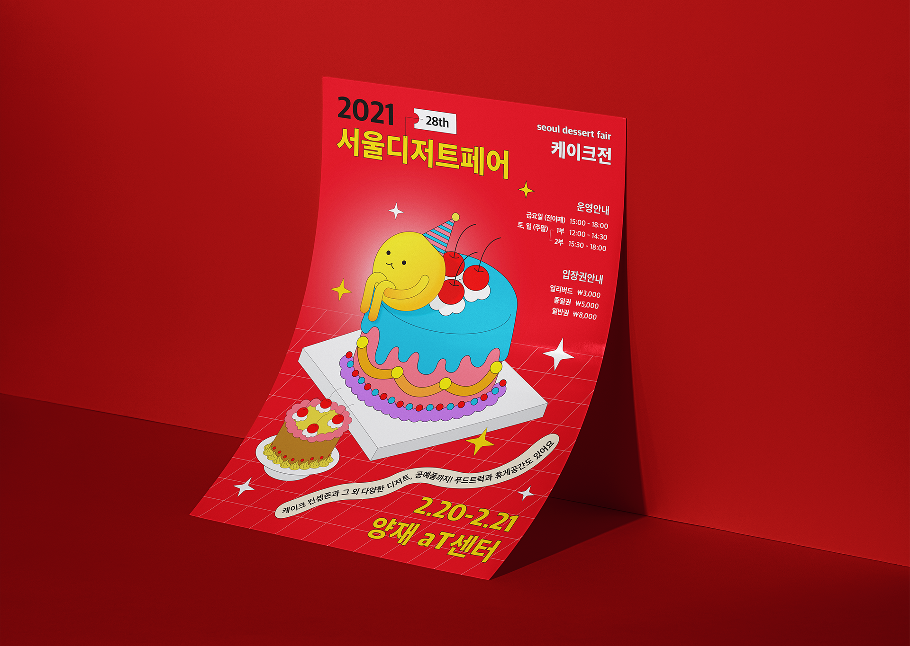

mockup
02
Design Mockup

fair poster

핸드메이드 디저트 제품을 판매하는 행사인 '서울디저트페어'를 바탕으로
가상의 박람회 포스터를 제작하였습니다. 디저트의 대표격인 '케이크' 를 컨셉으로 하여
최신 디저트 트렌드의 디자인적 특징과 주요 타겟층의 특성을 고려한 리뉴얼을 통해
박람회의 주제를 나타내었습니다.
포스터
100%
2020. 10

RGB / 300dpi
A4
식욕을 자극하고 이목을 집중시키는
비비드 톤 배색
주 방문객인 MZ세대의 행동적 특성과
트렌드를 적극 반영한 디자인
디저트 커스터마이징 시대에 맞춘
컬러풀한 오브제로 눈을 즐겁게